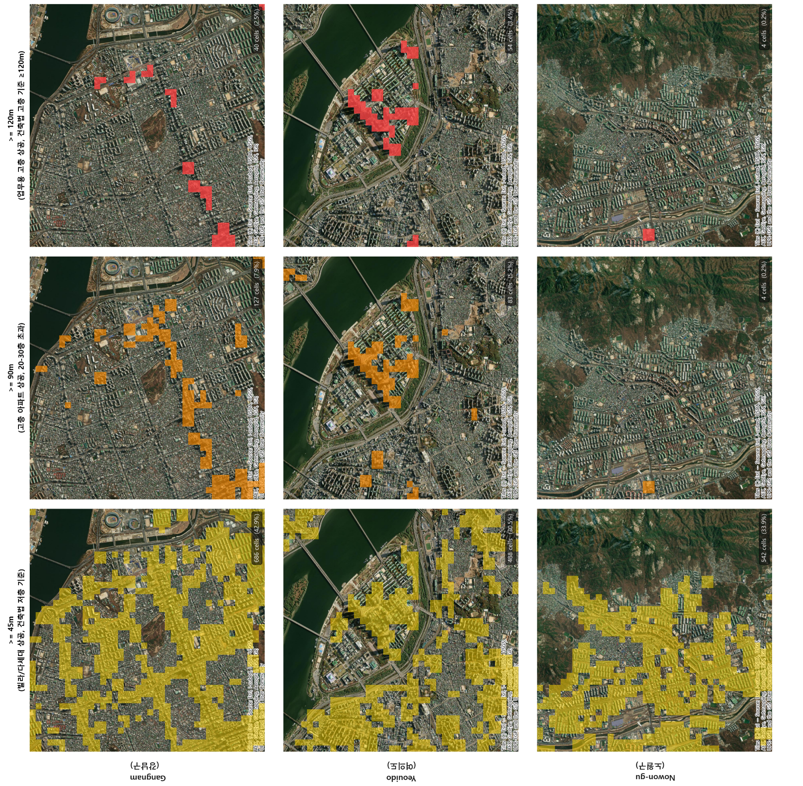

Research
연구분야
물류·네트워크·생산, 그리고 차세대 최적화 방법론까지 — IO-LAB의 네 가지 연구 축을 소개합니다.
물류 최적화
드론 배송, 지하 물류 네트워크, 시뮬레이션 기반 운영 최적화 세 축을 통해 라스트마일 배송의 비용·탄소 배출을 줄이는 연구를 수행합니다.
01
드론 배송 최적화
트럭-드론 복합 경로(FSTSP/mFSTSP), 비행 창고 기반 보충 스케줄링, 다중 비행 수준(FL1 20m / FL2 60m / FL3 120m) 드론 경로 최적화를 연구합니다. MILP·ALNS·ML 에너지 모델을 결합해 페이로드-에너지 의존성과 No-fly zone 제약을 현실적으로 다룹니다.
02
지하 물류 네트워크
도심 지하를 활용한 화물 캡슐·AGV 터널망과 지상 라스트마일 구간을 통합 설계합니다. 지하-지상 복합 환승 거점 배치, 용량 제약 하의 경로 최적화, 탄소 배출 및 도로 혼잡 비용 동시 절감을 목표로 합니다.
03
운영 최적화 & 시뮬레이션
VRP 및 변형 문제(CVRP, PDPTW 등)를 수리 모델로 정식화하고 ALNS·GRASP 메타휴리스틱으로 대규모 인스턴스를 해결합니다. 시뮬레이션 기반 검증으로 수요 불확실성·차량 고장·교통 혼잡 시나리오를 평가합니다.
차량 경로 (VRP)
드론 배송
라스트마일
비행 창고
지하 물류
공급망 설계



ApplicationsAmazon · UPS · DHL · 스마트시티 플랫폼
관련 논문
- Jeong, H. Y., Song, B. D. (2025). Optimizing Urban Logistics: VRP with Underground Transportation. IEEE Transactions on Intelligent Transportation Systems.
- Jeong, H. Y., Song, B. D. (2025). Optimization of Urban Logistics with Multi-Modal Systems: Airship-Vehicle Routing Problem. Transportation Research Part E.
- Kim, Y., Jeong, H. Y.*, Lee, S. (2024). Drone delivery problem with multi-flight level: Machine learning based solution approach. Computers & Industrial Engineering.
- Kim, B., Jeong, H. Y.*, Lee, S. (2023). Two-echelon collaborative routing problem with heterogeneous crowd-shippers. Computers & Operations Research.
- Jeong, H. Y., Lee, S.* (2023). Drone routing problem with truck: Optimization and quantitative analysis. Expert Systems with Applications.
- Jeong, H. Y., Song, B. D.*, Lee, S. (2022). Optimal scheduling for multi-flying warehouse: Amazon airborne fulfillment center. Transportation Research Part C.
- Jeong, H. Y., Song, B. D.*, Lee, S. (2020). The flying warehouse delivery system. IEEE Transactions on Intelligent Transportation Systems.
- Jeong, H. Y., David, J. Y., Min, B. C., Lee, S.* (2020). The humanitarian flying warehouse. Transportation Research Part E.
- Jeong, H. Y., Song, B. D.*, Lee, S. (2019). Truck-drone hybrid delivery routing: Payload-energy dependency and No-Fly zones. International Journal of Production Economics.